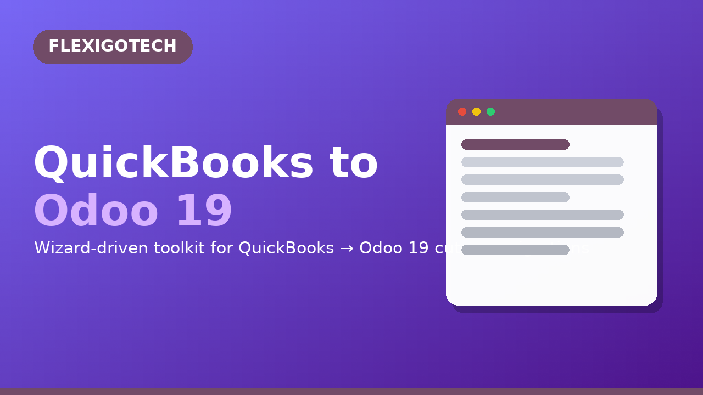
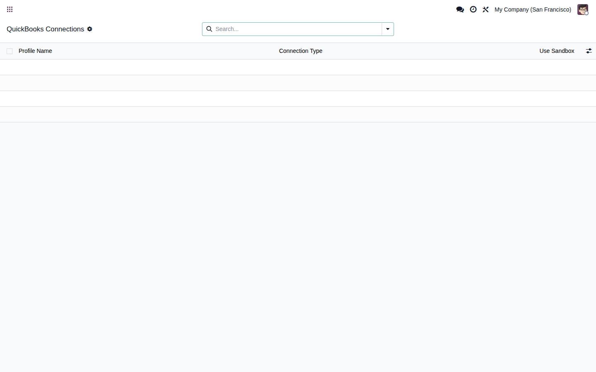
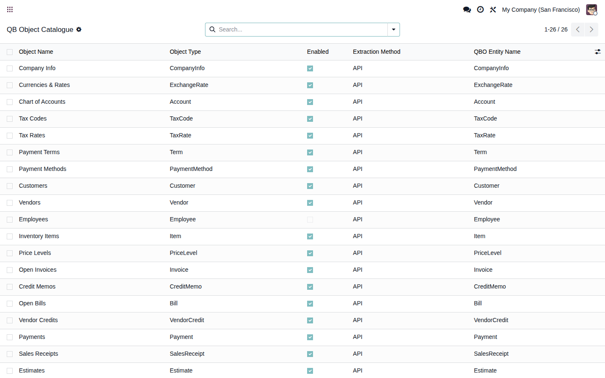

<!-- QuickBooks to Odoo 19 Accounting Migration Wizard &mdash; flexigo_quickbooks_to_odoo_19_accounting_migration_wiza -->
<section class="oe_container">
  <div class="container py-4">

    <!-- 1. HERO -->
    <div class="row justify-content-center text-center mb-5">
      <div class="col-lg-9">
        <span class="badge bg-primary mb-3">Compliance &middot; Odoo 19</span>
        <h1 class="display-5 fw-bold mb-3">QuickBooks to Odoo 19 Accounting Migration Wizard for Odoo 19</h1>
        <p class="lead text-muted mb-4">Wizard-driven QuickBooks to Odoo 19 migrations&mdash;OAuth or file upload, GL reconciliation, multi-run staging, and full audit trails.</p>
        
      </div>
    </div>

    <!-- 2. PROBLEM -->
    <div class="row justify-content-center mb-5">
      <div class="col-lg-9">
        <h2 class="fw-bold mb-3">The problem buyers face today</h2>
        <p>QuickBooks migrations are manual, slow, and error-prone. Teams copy GL data by hand into spreadsheets, lose audit trails in the process, and struggle to map QuickBooks accounts to Odoo&rsquo;s chart of accounts structure. Each cutover re-invents the wheel, leaving teams uncertain whether their data is complete and correct.</p>
      </div>
    </div>

    <!-- 3. SOLUTION -->
    <div class="row justify-content-center mb-5">
      <div class="col-lg-9">
        <h2 class="fw-bold mb-3">How this wizard solves it</h2>
        <p>This module connects to QuickBooks Online (secure OAuth) or Desktop (file upload), extracts GL, AR, AP, and inventory masters, and loads them into Odoo 19 with full reconciliation, audit trails, and GDPR compliance. Every record carries source provenance; every run is logged; cutover is controlled and reversible.</p>
      </div>
    </div>

    <!-- 4. FEATURES (Bootstrap grid &mdash; survives style strip) -->
    <h2 class="fw-bold text-center mb-4">Key features</h2>
    <div class="row g-4 mb-5">
      <div class="col-md-4">
        <div class="card h-100 shadow-sm">
          <div class="card-body">
            <h3 class="card-title h5">OAuth &amp; File Upload</h3>
            <p class="card-text">Connect QuickBooks Online securely, or upload QBX files from Desktop. No manual data exports or risky copy-paste.</p>
          </div>
        </div>
      </div>
      <div class="col-md-4">
        <div class="card h-100 shadow-sm">
          <div class="card-body">
            <h3 class="card-title h5">GL Reconciliation</h3>
            <p class="card-text">Trial balance, accounts receivable, accounts payable, and inventory are validated before go-live. Variance reports are signed off.</p>
          </div>
        </div>
      </div>
      <div class="col-md-4">
        <div class="card h-100 shadow-sm">
          <div class="card-body">
            <h3 class="card-title h5">Full Lineage &amp; Audit</h3>
            <p class="card-text">Every GL entry carries source account code, original amount, and exchange rate. Run logs are immutable; GDPR compliance built in.</p>
          </div>
        </div>
      </div>
    </div>

    <!-- 5. VIDEO WALKTHROUGH (3-lang <details> accordion &mdash; Apps Store-safe) -->
    <h2 class="fw-bold text-center mb-4">Watch the 2-minute walkthrough</h2>
    <div class="row justify-content-center mb-5">
      <div class="col-lg-9">
        <details open class="mb-2 p-2 border rounded">
          <summary class="fw-semibold">English &mdash; 2-minute walkthrough</summary>
          <video class="img-fluid rounded shadow-sm mt-2" controls preload="metadata" playsinline poster="walkthrough_poster.png">
            <source src="walkthrough.en.mp4" type="video/mp4"/>
            <source src="https://raw.githubusercontent.com/Flexigotech/flexigo-quickbooks-to-odoo-19-accounting-migration-wiza/19.0/flexigo_quickbooks_to_odoo_19_accounting_migration_wiza/static/description/walkthrough.en.mp4" type="video/mp4"/>
            <track kind="subtitles" src="walkthrough.en.vtt" srclang="en" label="English" default/>
          </video>
        </details>
        <details class="mb-2 p-2 border rounded">
          <summary class="fw-semibold">Espa&ntilde;ol &mdash; walkthrough de 2 minutos</summary>
          <video class="img-fluid rounded shadow-sm mt-2" controls preload="metadata" playsinline poster="walkthrough_poster.png">
            <source src="walkthrough.es.mp4" type="video/mp4"/>
            <source src="https://raw.githubusercontent.com/Flexigotech/flexigo-quickbooks-to-odoo-19-accounting-migration-wiza/19.0/flexigo_quickbooks_to_odoo_19_accounting_migration_wiza/static/description/walkthrough.es.mp4" type="video/mp4"/>
            <track kind="subtitles" src="walkthrough.es.vtt" srclang="es" label="Espanol" default/>
          </video>
        </details>
        <details class="mb-2 p-2 border rounded">
          <summary class="fw-semibold">Deutsch &mdash; 2-Minuten-Rundgang</summary>
          <video class="img-fluid rounded shadow-sm mt-2" controls preload="metadata" playsinline poster="walkthrough_poster.png">
            <source src="walkthrough.de.mp4" type="video/mp4"/>
            <source src="https://raw.githubusercontent.com/Flexigotech/flexigo-quickbooks-to-odoo-19-accounting-migration-wiza/19.0/flexigo_quickbooks_to_odoo_19_accounting_migration_wiza/static/description/walkthrough.de.mp4" type="video/mp4"/>
            <track kind="subtitles" src="walkthrough.de.vtt" srclang="de" label="Deutsch" default/>
          </video>
        </details>
      </div>
    </div>

    <!-- 6. SCREENSHOTS (real backend, Bootstrap grid) -->
    <h2 class="fw-bold text-center mb-4">See it inside Odoo</h2>
    <div class="row g-4 mb-5">
      <div class="col-12">
        <!-- GEN:GALLERY:BEGIN -->
        <figure class="figure w-100">
          
          <figcaption class="figure-caption">1 &middot; QuickBooks Connections.</figcaption>
        </figure>
        <figure class="figure w-100">
          
          <figcaption class="figure-caption">2 &middot; QB Object Catalogue.</figcaption>
        </figure>
        <!-- GEN:GALLERY:END -->
      </div>
    </div>

    <!-- 7. AUDIENCE / COMPATIBILITY -->
    <div class="row g-4 mb-5">
      <div class="col-md-6">
        <div class="card h-100 shadow-sm">
          <div class="card-body">
            <h2 class="h4 fw-bold">Who it is for</h2>
            <ul class="mb-0">
              <li>Finance controllers and accounting managers</li>
              <li>System integrators and Odoo partners</li>
              <li>SMBs (10–200 employees) moving from QuickBooks to Odoo 19</li>
              <li>CFO teams managing consolidations or multi-company rollups</li>
            </ul>
          </div>
        </div>
      </div>
      <div class="col-md-6">
        <div class="card h-100 shadow-sm">
          <div class="card-body">
            <h2 class="h4 fw-bold">Compatibility</h2>
            <p class="mb-0">Odoo 19 Community and Enterprise. No external SaaS required.</p>
          </div>
        </div>
      </div>
    </div>

    <!-- 8. PRICING -->
    <div class="row justify-content-center mb-5">
      <div class="col-md-6">
        <div class="card text-center shadow-sm bg-primary text-white">
          <div class="card-body">
            <h2 class="h4 fw-bold text-white">Pricing</h2>
            <p class="display-6 fw-bold mb-0">FREE</p>
            <p class="mb-0">LGPL-3 open-source module</p>
            <p style="font-size: 0.9rem; margin-top: 1rem; margin-bottom: 0;" class="text-white-50">Implementation service available at <a href="https://flexigotech.com/services" style="color: #ffffff; text-decoration: underline;">flexigotech.com/services</a></p>
          </div>
        </div>
      </div>
    </div>

    <!-- 9. FAQ (>=5 <details> phrased as search queries) -->
    <h2 class="fw-bold text-center mb-4">Frequently asked questions</h2>
    <div class="row justify-content-center mb-5">
      <div class="col-lg-9">
        <details class="mb-2 p-2 border rounded"><summary class="fw-semibold">How do I install this module?</summary><p class="mt-2 mb-0">Click &ldquo;Install&rdquo; in your Odoo App Store. The module is open-source (LGPL-3) and works on Odoo 19 Community and Enterprise. It depends on <code>flexigo_migration_base</code>, which will be installed automatically.</p></details>
        <details class="mb-2 p-2 border rounded"><summary class="fw-semibold">Does it work on Odoo Community?</summary><p class="mt-2 mb-0">Yes. All core migration features (connection, extraction, mapping, validation, load, reconciliation) work on Community. Enterprise-only features like fixed asset migration are optional.</p></details>
        <details class="mb-2 p-2 border rounded"><summary class="fw-semibold">Can I run multiple migrations?</summary><p class="mt-2 mb-0">Yes. The module supports incremental cutover: run migrations multiple times, staging data accumulates, and go-live triggers load. Rollback is trivial via the run log.</p></details>
        <details class="mb-2 p-2 border rounded"><summary class="fw-semibold">Is my data kept confidential?</summary><p class="mt-2 mb-0">Yes. The module does not transmit your data to external services. QuickBooks credentials are encrypted with Fernet symmetric encryption and never logged in plaintext. Run logs are stored inside your Odoo database.</p></details>
        <details class="mb-2 p-2 border rounded"><summary class="fw-semibold">What if I need help with the migration?</summary><p class="mt-2 mb-0">FlexigoTech offers paid implementation services including discovery, pilot runs, go-live cutover, and post-cutover support. <a href="https://flexigotech.com/services" style="color: #0066cc;">Request a quote at flexigotech.com/services</a>.</p></details>
      </div>
    </div>

    <!-- 10. CTA -->
    <div class="row justify-content-center text-center">
      <div class="col-lg-8">
        <div class="card shadow-sm bg-dark text-white">
          <div class="card-body py-4">
            <h2 class="fw-bold text-white">Ready to migrate from QuickBooks?</h2>
            <p class="mb-3">This free, open-source module is your foundation. For expert guidance through discovery, pilot, and go-live, FlexigoTech provides professional implementation services.</p>
            <a class="btn btn-light fw-semibold me-2 mb-2" href="https://apps.odoo.com/apps/modules/19.0/flexigo_quickbooks_to_odoo_19_accounting_migration_wiza">Install from Apps Store</a>
            <a class="btn btn-light fw-semibold" href="https://flexigotech.com/services">Request Implementation Quote</a>
          </div>
        </div>
      </div>
    </div>

  </div>
</section>
